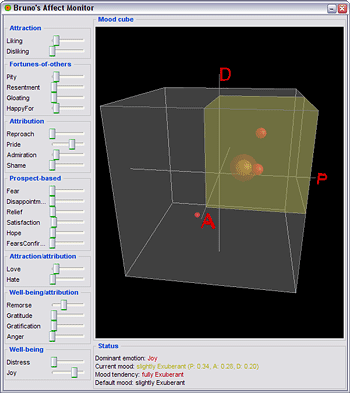

The Affect Monitor |
|
 |
The Affect Monitor is a graphical interface that monitors the
current affective state of a character.

The left side of the
Affect Monitor shows a character's emotions and their intensities.
The right side shows a 3 dimensional PDA mood cube displaying the
current mood (the highlighted octant stands for the discrete mood
description, whereas the yellow sphere reflects the actual mood) and
all active emotions (red sphere). Below, the affective state is
displayed. That includes the current dominant emotion, the default
mood, the current mood, and a mood tendency that is computed on
assumptions made on current active emotions.
ALMA Help - Version 1.3 -
07.05.2008
Author: Patrick Gebhard